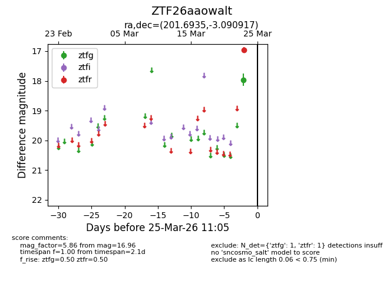
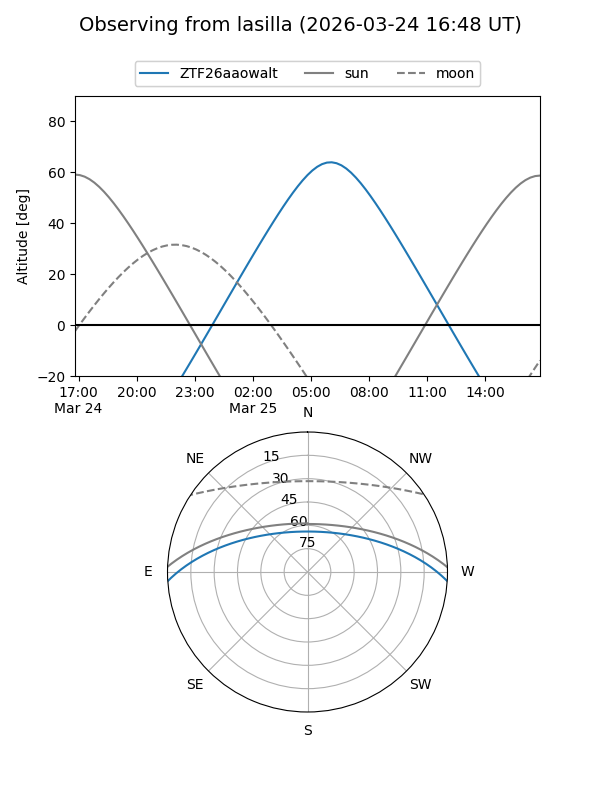
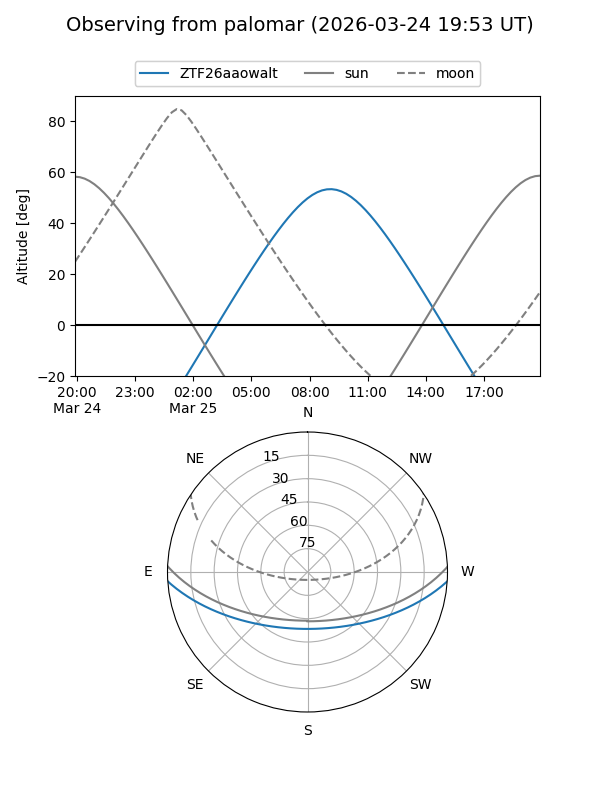

ZTF26aaowalt
Target ZTF26aaowalt at 2026-03-25 11:08
Aliases and brokers:
FINK: link
Lasair: link
ALeRCE: link
alt names
ZTF26aaowalt (ztf,fink_ztf)
Coordinates:
equatorial (ra, dec) = 201.6935,-3.09092
equatorial (HMS+DMS) = 13:26:46.45,-03:05:27.30
galactic (l, b) = (320.0502,+58.60146)
Flags:
Photometry:
last ztfg=17.96, ztfr=16.96
1 ztfg, 1 ztfr detections
Lightcurve

Visibility


Additional plots